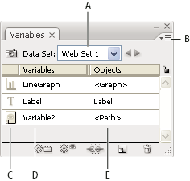

Variables panel overview
You use the Variables panel (Window > Variables) to work with variables and data sets. The type and name of each variable in the document are listed in the panel. If the variable is bound to an object, then the Objects column displays the name of the bound object as it appears in the Layers panel.

- A.
- Data set
- B.
- Panel menu
- C.
- Variable type
- D.
- Variable name
- E.
- Name of bound object
The Variables panel uses the following icons to indicate a variable’s type:
-
Visibility variable .
-
Text String variable .
-
Linked File variable .
-
Graph Data variable .
-
No Type (unbound) variable .
You can sort the rows by clicking items in the header bar: by variable name, object name, or by variable type.